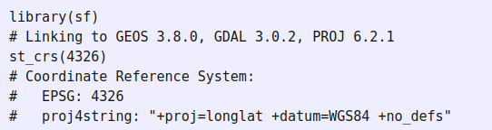

name <- LETTERS[1:10]
longitude <- c(-116.7, -120.4, -116.7, -113.5, -115.5,
-120.8, -119.5, -113.7, -113.7, -110.7)
latitude <- c(45.3, 42.6, 38.9, 42.1, 35.7, 38.9,
36.2, 39, 41.6, 36.9)
stations <- cbind(longitude, latitude)
# Simulated rainfall data
set.seed(0)
precip <- round((runif(length(latitude))*10)^3)Análisis Espacial con R
Datos Espaciales en R
Dr. Francisco Zambrano Bigiarini
Hemera, Universidad Mayor
Contenidos
Datos Espaciales en R
- Datos vectoriales
- Datos raster
1. Datos espaciales en R
Tipos de dato espaciales
Discretos: datos vectorialesContinuos: datos raster
Simple representación de datos espaciales
1. Datos espaciales
Simple representación de datos espaciales
psize <- 1 + precip/500
plot(stations, cex=psize, pch=20, col='red', main='Precipitation')
# add names to plot
text(stations, name, pos=4)
# add a legend
breaks <- c(100, 250, 500, 1000)
legend.psize <- 1+breaks/500
legend("topright", legend=breaks, pch=20, pt.cex=legend.psize, col='red', bg='gray')1. Datos espaciales
Simple representación de datos espaciales

1. Datos espaciales
Simple representación de datos espaciales
1. Datos espaciales
Simple representación de datos espaciales

1. Datos espaciales
Simple representación de datos espaciales
Podemos almacenar datos espaciales en un data.frame
longitude latitude name precip
1 -116.7 45.3 A 721
2 -120.4 42.6 B 19
3 -116.7 38.9 C 52
4 -113.5 42.1 D 188
5 -115.5 35.7 E 749
6 -120.8 38.9 F 8
7 -119.5 36.2 G 725
8 -113.7 39.0 H 843
9 -113.7 41.6 I 289
10 -110.7 36.9 J 2492. Datos espaciales vectoriales
Simple Feature {sf}
Utilizaremos
{sf}Tener cuidado ya que el más utilizado por mucho tiempo fue
{sp}(mas antiguo)Muchos ejemplos o incluso usos que vean por ahí estarán con los tipos de datos definidos por
{sp}{sp}está siendo (o ya fue) reemplazado por{sf}
Simple Feature: se refiere a un estándar formal (ISO 19125-1: 2004) que describe cómo los objetos en el mundo real se pueden representar en computadoras, con énfasis en la geometría espacial de estos objetos.
2. Datos espaciales vectoriales
Simple Feature {sf}: Dimensiones
- Todas las geometrias (puntos, lineas, polígonos) están formadas por puntos.
- 2, 3, o 4 dimensiones
- Todos los puntos en una geometría tienen la misma dimensión
- Ademas de
XeYhay dos opciones- coordenada
Zpara altitud - coordenada
Mmedición asociada con el punto (ej, tiempo en que fue medido)
- coordenada
2. Datos espaciales vectoriales
Simple Feature {sf}: Dimensiones
- Cuatro casos posibles:
- 2D (X,Y), (E, N), (Lon,Lat):
XY - 3D :
XYZ - 3D :
XYM - 4D :
XYZM
- 2D (X,Y), (E, N), (Lon,Lat):
2. Datos espaciales vectoriales
Simple Feature {sf}: Tipos de geometrías
| Tipo | Descripción |
|---|---|
POINT |
geometría dimensión cero, un punto |
LINESTRING |
varios puntos, secuencia de puntos conectados por líneas rectas que no se intersecan; geometría unidimensional |
POLYGON |
geometría con un área positiva (bidimensional); la secuencia de puntos forma un anillo cerrado que no se interseca |
MULTIPOINT |
grupo de POINT |
MULTILINESTRING |
grupo de LINESTRING |
MULTIPOLYGON |
grupo de POLYGON |
GEOMETRYCOLLECTION |
grupo de geometrías de cualquier tipo |
2. Datos espaciales vectoriales
Simple Feature {sf}: Clases
Geometria -> list-column (tipo de dato)
Atributos -> data.frame
Como {sf} almacena las Simple Features.
Los tres tipos de datos utilizados para representarlos son:
- sf: la tabla (data.frame) con los atributos y geometría de la entidad , que contiene
- sfc : la list-colum con la geometría de cada entidad (registro), que está compuesto de
- sfg: la geometría de la entidad de cada simple feature individual
2. Datos espaciales vectoriales
Simple Feature {sf}: Clase sf
Reading layer `nc' from data source
`/home/francisco/R/x86_64-pc-linux-gnu-library/4.2/sf/shape/nc.shp'
using driver `ESRI Shapefile'
Simple feature collection with 100 features and 14 fields
Geometry type: MULTIPOLYGON
Dimension: XY
Bounding box: xmin: -84.32385 ymin: 33.88199 xmax: -75.45698 ymax: 36.58965
Geodetic CRS: NAD272. Datos espaciales vectoriales
Simple Feature {sf}: Clase sf
2. Datos espaciales vectoriales
Simple Feature {sf}: Clase sf
2. Datos espaciales vectoriales
Simple Feature {sf}: Clase sf
2. Datos espaciales vectoriales
Simple Feature {sf}: Clase sf
Simple feature collection with 100 features and 6 fields
Geometry type: MULTIPOLYGON
Dimension: XY
Bounding box: xmin: -84.32385 ymin: 33.88199 xmax: -75.45698 ymax: 36.58965
Geodetic CRS: NAD27
First 3 features:
BIR74 SID74 NWBIR74 BIR79 SID79 NWBIR79 geometry
1 1091 1 10 1364 0 19 MULTIPOLYGON (((-81.47276 3...
2 487 0 10 542 3 12 MULTIPOLYGON (((-81.23989 3...
3 3188 5 208 3616 6 260 MULTIPOLYGON (((-80.45634 3...2. Datos espaciales vectoriales
Simple Feature {sf}: Clase sf

VERDE: Simple Feature individual, atributos + geometría
AZUL: geometría (objeto de clase sfg)
ROJO: Simple Feature list-column (sfc)
2. Datos espaciales vectoriales
sfc (simple feature list-column)
Simple Feature {sf}: Clase sfc
2. Datos espaciales vectoriales
Simple Feature {sf}: Clase sfc
2. Datos espaciales vectoriales
Simple Feature {sf}: Clase sfc

2. Datos espaciales vectoriales
Simple Feature {sf}: Clase sfc
[1] "n_empty" "crs" "class" "precision" "bbox" Coordinate Reference System:
User input: NAD27
wkt:
GEOGCRS["NAD27",
DATUM["North American Datum 1927",
ELLIPSOID["Clarke 1866",6378206.4,294.978698213898,
LENGTHUNIT["metre",1]]],
PRIMEM["Greenwich",0,
ANGLEUNIT["degree",0.0174532925199433]],
CS[ellipsoidal,2],
AXIS["latitude",north,
ORDER[1],
ANGLEUNIT["degree",0.0174532925199433]],
AXIS["longitude",east,
ORDER[2],
ANGLEUNIT["degree",0.0174532925199433]],
ID["EPSG",4267]]2. Datos espaciales vectoriales
Simple Feature {sf}: Clase sfg
sfg (simple feature geometry) guarda la geometría de un a entidad individual, ej. un punto, una linea o polígono
Está implementada en en tipos de datos nativos de R (numeric, matrix, list), siguiendo la siguiente regla:
- un
POINTes unj vector numérico - un grupo de puntos, e.j. un
LINESTRINGo un anillo de unPOLYGONes unmatrixy cada fila de lamatrixes unPOINT - cualquier otro grupo es un
list
2. Datos espaciales vectoriales
Simple Feature {sf}: Clase sfg
2. Datos espaciales vectoriales
Simple Feature {sf}: Clase sfg
2. Datos espaciales vectoriales
Simple Feature {sf}: Clase sfg
2. Datos espaciales vectoriales
Simple Feature {sf}: Clase sfg
2. Datos espaciales vectoriales
Simple Feature {sf}: Clase sfg
p1 <- rbind(c(0,0), c(1,0), c(3,2), c(2,4), c(1,4), c(0,0))
p2 <- rbind(c(1,1), c(1,2), c(2,2), c(1,1))
pol <-st_polygon(list(p1,p2))
p3 <- rbind(c(3,0), c(4,0), c(4,1), c(3,1), c(3,0))
p4 <- rbind(c(3.3,0.3), c(3.8,0.3), c(3.8,0.8), c(3.3,0.8), c(3.3,0.3))[5:1,]
p5 <- rbind(c(3,3), c(4,2), c(4,3), c(3,3))
(mpol <- st_multipolygon(list(list(p1,p2), list(p3,p4), list(p5))))
(gc <- st_geometrycollection(list(mp, mpol, ls)))2. Datos espaciales vectoriales
Simple Feature {sf}: Clase sfg
par(mfrow=c(2,3))
plot(mp,col='red',main = 'MULTIPOINT')
plot(ls,col='red',main = 'LINESTRING')
plot(mls,col='red',main = 'MULTILINESTRING')
plot(pol,col = 'gray',border='red',main = 'POLIGON')
plot(mpol,col = 'gray',border='red',main = 'MULTIPOLIGON')
plot(gc,col = 'gray',border='red',main = 'GEOMETRY')2. Datos espaciales vectoriales
Simple Feature {sf}: Clase sfg
3. Datos espaciales raster
- Vamos a utilizar el paquete
{terra} {terra}está reemplazando a{raster}, ya que es más simple y rapido{terra}es nuevo, fue lanzado el 2020:
- Ya hay documentación y ejemplos
- Otros paquetes que utilizan datos espaciales se están actualizando para dar soporte a
{terra} - El paso de
{raster}a{terra}no es complicado - las funciones son muy similares a
{raster}.
3. Datos espaciales raster
El paquete {terra} tiene funciones para crear, leer, manipular y guardar datos raster y vectoriales.
Las clases definidas por {terra} son:
- SpatRaster
- SpatVector
3. Datos espaciales raster
Tipos de datos: spatRaster
- Representa bandas de información.
- Guarda información número de columnas y filas, extensión espacial, el sistema de referencia de coordenadas, extensión.
3. Datos espaciales raster
Tipos de datos: spatRaster
El objeto r solo tiene el esqueleto del raster, pero aún no tiene valores
class : SpatRaster
dimensions : 10, 10, 1 (nrow, ncol, nlyr)
resolution : 7, 4 (x, y)
extent : -150, -80, 20, 60 (xmin, xmax, ymin, ymax)
coord. ref. : lon/lat WGS 84
source(s) : memory
name : lyr.1
min value : 1
max value : 100 3. Datos espaciales raster
Tipos de datos: spatRaster
3. Datos espaciales raster
Tipos de datos:spatRaster multicapa
- Puede trabajar con un archvivo raster de mutiples capas (Ej, imagen satelital)
- Puede trabajar con datos raster desde diferentes archivos (Ej., series de tiempos guardados en archivos independientes.
3. Datos espaciales raster
Tipos de datos: spatRaster multicapa
class : SpatRaster
dimensions : 10, 10, 3 (nrow, ncol, nlyr)
resolution : 7, 4 (x, y)
extent : -150, -80, 20, 60 (xmin, xmax, ymin, ymax)
coord. ref. : lon/lat WGS 84
source(s) : memory
names : lyr.1, lyr.1, lyr.1
min values : 1, 1, 1
max values : 100, 10000, 10 3. Datos espaciales raster
Tipos de datos: spatRaster multicapa
4. Manejo de CRS en R
Coordenadas geográficas: esféricas
Coordenadas proyectadas: cónica, cilíndrica y planas
Para manejar CRS R utiliza la librería PROJ
PROJ.4 fue usado por más de 30 años, luego mutó a \(PR \phi J\), dando paso a PROJ5, PROJ6 y ahora PROJ7. PROJ8 en 2021.
Así, hay tres formatos para manejar los CRS
- proj.4
- EPSG
- Well-known Text (wkt)
{sf} usa wkt (well-known text) o EPSG
{terra} usa PROJ.4, wkt o EPSG
5. Datos vectoriales: {sf}
Versiones anteriores de {sf} (<0.9) ~
5. Datos vectoriales: {sf}
Ahora
Coordinate Reference System:
User input: EPSG:4326
wkt:
GEOGCRS["WGS 84",
ENSEMBLE["World Geodetic System 1984 ensemble",
MEMBER["World Geodetic System 1984 (Transit)"],
MEMBER["World Geodetic System 1984 (G730)"],
MEMBER["World Geodetic System 1984 (G873)"],
MEMBER["World Geodetic System 1984 (G1150)"],
MEMBER["World Geodetic System 1984 (G1674)"],
MEMBER["World Geodetic System 1984 (G1762)"],
MEMBER["World Geodetic System 1984 (G2139)"],
ELLIPSOID["WGS 84",6378137,298.257223563,
LENGTHUNIT["metre",1]],
ENSEMBLEACCURACY[2.0]],
PRIMEM["Greenwich",0,
ANGLEUNIT["degree",0.0174532925199433]],
CS[ellipsoidal,2],
AXIS["geodetic latitude (Lat)",north,
ORDER[1],
ANGLEUNIT["degree",0.0174532925199433]],
AXIS["geodetic longitude (Lon)",east,
ORDER[2],
ANGLEUNIT["degree",0.0174532925199433]],
USAGE[
SCOPE["Horizontal component of 3D system."],
AREA["World."],
BBOX[-90,-180,90,180]],
ID["EPSG",4326]]5. Datos vectoriales: {sf}
Recomendación utilizar EPSG (European Petroleum Survey Group) y wkt para identificar el CRS, cuando sea posible. No se aconseja el uso de proj4.
Transformar de un CRS a otro con la función st_transform
6. Datos raster: {terra}
Asignar un CRS a un raster. Utilce EPSG o wkt
[1] ""GEOGCRS["WGS 84",
ENSEMBLE["World Geodetic System 1984 ensemble",
MEMBER["World Geodetic System 1984 (Transit)",
ID["EPSG",1166]],
MEMBER["World Geodetic System 1984 (G730)",
ID["EPSG",1152]],
MEMBER["World Geodetic System 1984 (G873)",
ID["EPSG",1153]],
MEMBER["World Geodetic System 1984 (G1150)",
ID["EPSG",1154]],
MEMBER["World Geodetic System 1984 (G1674)",
ID["EPSG",1155]],
MEMBER["World Geodetic System 1984 (G1762)",
ID["EPSG",1156]],
MEMBER["World Geodetic System 1984 (G2139)",
ID["EPSG",1309]],
ELLIPSOID["WGS 84",6378137,298.257223563,
LENGTHUNIT["metre",1],
ID["EPSG",7030]],
ENSEMBLEACCURACY[2.0],
ID["EPSG",6326]],
PRIMEM["Greenwich",0,
ANGLEUNIT["degree",0.0174532925199433],
ID["EPSG",8901]],
CS[ellipsoidal,2],
AXIS["longitude",east,
ORDER[1],
ANGLEUNIT["degree",0.0174532925199433,
ID["EPSG",9122]]],
AXIS["latitude",north,
ORDER[2],
ANGLEUNIT["degree",0.0174532925199433,
ID["EPSG",9122]]],
USAGE[
SCOPE["unknown"],
AREA["World."],
BBOX[-90,-180,90,180]]]6. Datos raster: {terra}
Reproyectar
6. Datos raster: {terra}
Reproyectar
class : SpatRaster
dimensions : 45, 37, 1 (nrow, ncol, nlyr)
resolution : 2521.73, 2521.73 (x, y)
extent : 229578.6, 322882.7, 5900724, 6014202 (xmin, xmax, ymin, ymax)
coord. ref. : WGS 84 / UTM zone 19S (EPSG:32719)
source(s) : memory
name : lyr.1
min value : 2.82134
max value : 1600.00000 6. Datos raster: {terra}
Reproyectar
6. Conversion entre CRS({terra}) y crs({sf})
De sf a terra
De terra a sf
7. Algunas operaciones espaciales
Necesitamos para poder reproducir
nz: geometria de Nueva Zelanda
nz_height : geometría de las mayores alturas en Nueva Zelanda
7. Operaciones espaciales con datos vectoriales
Filtrado espacial
Simple feature collection with 16 features and 6 fields
Geometry type: MULTIPOLYGON
Dimension: XY
Bounding box: xmin: 1090144 ymin: 4748537 xmax: 2089533 ymax: 6191874
Projected CRS: NZGD2000 / New Zealand Transverse Mercator 2000
First 10 features:
Name Island Land_area Population Median_income Sex_ratio
1 Northland North 12500.561 175500 23400 0.9424532
2 Auckland North 4941.573 1657200 29600 0.9442858
3 Waikato North 23900.036 460100 27900 0.9520500
4 Bay of Plenty North 12071.145 299900 26200 0.9280391
5 Gisborne North 8385.827 48500 24400 0.9349734
6 Hawke's Bay North 14137.524 164000 26100 0.9238375
7 Taranaki North 7254.480 118000 29100 0.9569363
8 Manawatu-Wanganui North 22220.608 234500 25000 0.9387734
9 Wellington North 8048.553 513900 32700 0.9335524
10 West Coast South 23245.456 32400 26900 1.0139072
geom
1 MULTIPOLYGON (((1745493 600...
2 MULTIPOLYGON (((1803822 590...
3 MULTIPOLYGON (((1860345 585...
4 MULTIPOLYGON (((2049387 583...
5 MULTIPOLYGON (((2024489 567...
6 MULTIPOLYGON (((2024489 567...
7 MULTIPOLYGON (((1740438 571...
8 MULTIPOLYGON (((1866732 566...
9 MULTIPOLYGON (((1881590 548...
10 MULTIPOLYGON (((1557042 531...7. Operaciones espaciales con datos vectoriales
Filtrado espacial
Classes 'sf' and 'data.frame': 16 obs. of 7 variables:
$ Name : chr "Northland" "Auckland" "Waikato" "Bay of Plenty" ...
$ Island : chr "North" "North" "North" "North" ...
$ Land_area : num 12501 4942 23900 12071 8386 ...
$ Population : num 175500 1657200 460100 299900 48500 ...
$ Median_income: int 23400 29600 27900 26200 24400 26100 29100 25000 32700 26900 ...
$ Sex_ratio : num 0.942 0.944 0.952 0.928 0.935 ...
$ geom :sfc_MULTIPOLYGON of length 16; first list element: List of 1
..$ :List of 1
.. ..$ : num [1:68, 1:2] 1745493 1740539 1733165 1720197 1709110 ...
..- attr(*, "class")= chr [1:3] "XY" "MULTIPOLYGON" "sfg"
- attr(*, "sf_column")= chr "geom"
- attr(*, "agr")= Factor w/ 3 levels "constant","aggregate",..: NA NA NA NA NA NA
..- attr(*, "names")= chr [1:6] "Name" "Island" "Land_area" "Population" ...7. Operaciones espaciales con datos vectoriales
Simple feature collection with 101 features and 2 fields
Geometry type: POINT
Dimension: XY
Bounding box: xmin: 1204143 ymin: 5048309 xmax: 1822492 ymax: 5650492
Projected CRS: NZGD2000 / New Zealand Transverse Mercator 2000
First 10 features:
t50_fid elevation geometry
1 2353944 2723 POINT (1204143 5049971)
2 2354404 2820 POINT (1234725 5048309)
3 2354405 2830 POINT (1235915 5048745)
4 2369113 3033 POINT (1259702 5076570)
5 2362630 2749 POINT (1378170 5158491)
6 2362814 2822 POINT (1389460 5168749)
7 2362817 2778 POINT (1390166 5169466)
8 2363991 3004 POINT (1372357 5172729)
9 2363993 3114 POINT (1372062 5173236)
10 2363994 2882 POINT (1372810 5173419)7. Operaciones espaciales con datos vectoriales
Filtrado espacial
7. Operaciones espaciales con datos vectoriales
Filtrado espacial
Problema:Seleccionemos las máximas alturas en Canterbury
alternativa 1
Otra alternativa: con operaciones geométricas
7. Operaciones espaciales en datos vectoriales
Filtrado espacial
7. Operaciones espaciales en datos vectoriales
Distancia
Problema: calcular la distancia entre el punto de mayor altura en Nueva Zelanda y el centroide da la región de Canterbury.
7. Operaciones espaciales en datos vectoriales
Distancia
Dos cosas que hay que notar:
1. el resultado tiene unidades, indicando que es en metros, no kilometros, pies, etc.
2. el resultado se entrega en forma de matriz, aunque en este caso tiene un solo valor
st_distance devuelve una matriz de distancia. La función tiene la habilidad de calcular la distancia entre cualquier combinación de objetos.
7. Operaciones espaciales en datos vectoriales
Distancia
Problema: calcular la distancia entre las regiones de Canterbury y Otago con las tres primeras altura de nz_height
7. Operaciones espaciales en datos vectoriales
Distancia
8. Operaciones espaciales en datos raster
Usaremos los datos: 1. elev : datos raster de elevación en metros. 2. grain : datos raster de granulométricos

8. Operaciones espaciales en datos raster
Subset espacial
Funciones {terra}: cellFromXY extract
Problema: extraer los valores de elevación que están a 0.1 unidades desde el origen.
8. Operaciones espaciales en datos raster
Subset espacial
Se pueden realizar subset con otros datos raster.
8. Operaciones espaciales en datos raster
Subset espacial
- Hasta ahora los subset devuelven los valores numéricos.
- Si queremos que el resultado sea entregado como objeto espacial¿?
class : SpatRaster
dimensions : 2, 1, 1 (nrow, ncol, nlyr)
resolution : 0.5, 0.5 (x, y)
extent : 1, 1.5, -0.5, 0.5 (xmin, xmax, ymin, ymax)
coord. ref. : lon/lat WGS 84 (EPSG:4326)
source(s) : memory
varname : elev
name : elev
min value : 18
max value : 24 8. Operaciones espaciales en datos raster
Subset espacial
Otro caso comun de subset espacial es utilizar una mascara lógica (con NA y 1).

8. Operaciones espaciales en datos raster
Subset espacial

8. Operaciones espaciales en datos raster
Operaciones locales
Algebra raster
Función app
Función app

9. Interacciones raster-vectorial
Cortado de raster
9. Interacciones raster-vectorial
Cortado de raster
Función de corte crop

9. Interacciones raster-vectorial
Cortado de raster
Función de mascara mask
9. Interacciones raster-vectorial
Cortado de raster
La mayoría de las veces se utilizaran las dos funciones. crop para limitar la estensión y mask para reemplazar por NA los valores fuera de la geometría.
9. Interacciones raster-vectorial
Cortado de raster
Argumento inverse = TRUE

10. Extracción raster
Desde puntos
10. Extracción raster
Desde líneas
10. Extracción raster
Desde polígono
10. Extracción raster
Desde polígono
# A tibble: 1 × 4
ID srtm_min srtm_mean srtm_max
<dbl> <int> <dbl> <int>
1 1 1122 1818. 2661